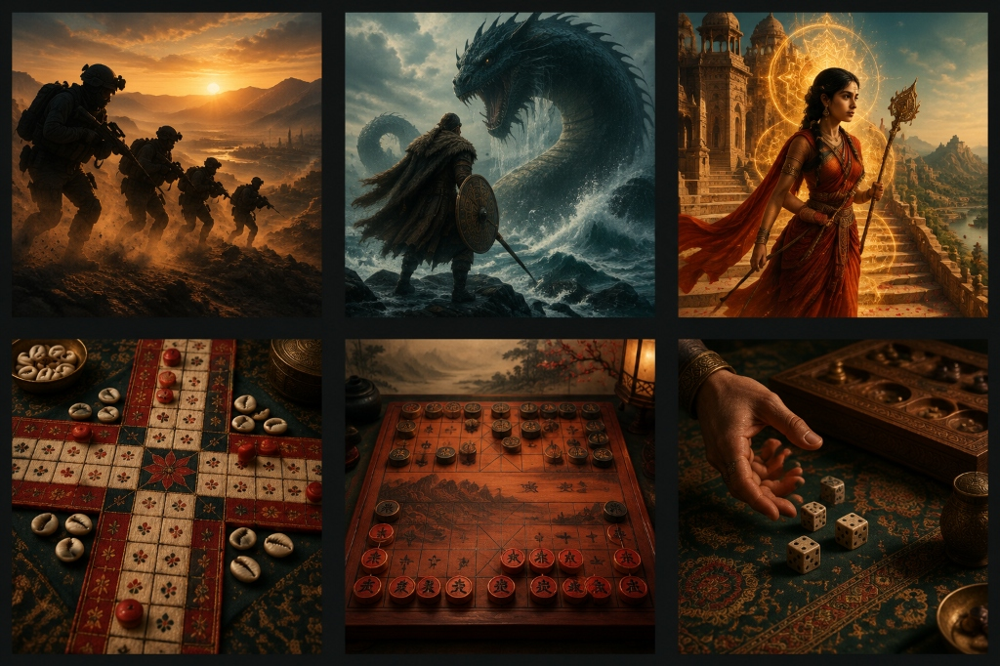

Game Inspirations

Call of Duty – tactical combat echoing ancient battlefield tactics.

God of War – mythic warfare reminiscent of early chess narratives.

Raji – Indian mythology and strategic combat, a spiritual descendant of Chaturanga.

Traditional Indian board games that pre‑date chess.

Chinese war‑games that share the same grid‑based tactical roots.

Shakuni’s dice – a legendary device from the Mahabharata influencing randomised combat.